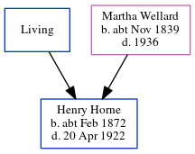

Henry William Horne cFeb 1872 - 1922
[ Home ] | [ Calendar ] | [ Surnames Index ] | [ Errors ] | [ Family History ]A furniture porter and the child of George Horn (a brewery labourer) and Martha Wellard, Henry Horne, the first cousin three-times-removed on the father's side of Nigel Horne, was born in Ramsgate, Kent, England c. Feb 18721,2,3,4,5,6,7,8 and baptised there at St George's Church on 14 May 1872.
During his life, he was living at 76 Queen Street in Ramsgate on 3 Apr 188112 and in 18912 (the same place as his parents had been living on 2 Apr 1871); at Paradise in Ramsgate on 31 Mar 190111 - less than a mile from his first cousin once-removed on his father's side Isaac Horne who was living at 15 Haine Cottages, St Lawrence, Thanet, Kent, England, his first cousin once-removed on his father's side Charles Henry, first cousin once-removed on his father's side Edmund Horne and cousin on his father's side Charles Horn who were living at 15 Haine Cottages -, his sister Mary Jane who was living at 38 Queen Street in Ramsgate -, his cousin on his father's side Caroline Horn who was living at 3 Elms Park Terrace in Ramsgate -, his sister Florence who was living at 8 Paradise in Ramsgate -, his uncle William Horn who was living at 62 Boundary Road in Ramsgate - and his cousin on his father's side George Charles who was living at 62 Boundary Road in Ramsgate -; at 23 Belle Vue Cottages in Ramsgate on 2 Apr 191110 - less than a mile from his cousin on his father's side Harry Horn who was living at 15 Liverpool Lawn in Ramsgate, his cousin on his father's side Ellen Mary Ann who was living at 71 Grange Road, Margate, Kent -, his sister Florence who was living at 2 Ethelbert Road in Ramsgate - and his cousin on his father's side George Charles who was living at 77 Hardres Street in Ramsgate -; at 29 Sussex Street in Ramsgate on 19 Jun 19215; and at 2 Ethelbert Road in Ramsgate in 1922. In 1921 he was working at R E Hodgman at 30 Kings Street, Ramsgate, Kent, England.
He died on 20 Apr 1922 in Ramsgate9.
Parents
- George
- Martha was born c. Nov 1839
Citations
- 1881 England Census Online publication - Provo, UT, USA: The Generations Network, Inc., 2004. 1881 British Isles Census Index provided by The Church of Jesus Christ of Latter-day Saints © Copyright 1999 Intellectual Reserve, Inc. All rights reserved. All use is subject to the
- 1891 England Census Online publication - Provo, UT, USA: The Generations Network, Inc., 2005.Original data - Census Returns of England and Wales, 1891. Kew, Surrey, England: The National Archives of the UK (TNA): Public Record Office (PRO), 1891. Data imaged from The National (Relation to Head of House: Son)
- 1901 England Census Online publication - Provo, UT, USA: The Generations Network, Inc., 2005.Original data - Census Returns of England and Wales, 1901. Kew, Surrey, England: The National Archives of the UK (TNA): Public Record Office (PRO), 1901. Data imaged from the National
- 1911 England Census Online publication - Provo, UT, USA: Ancestry.com Operations, Inc., 2011.Original data - Census Returns of England and Wales, 1911. Kew, Surrey, England: The National Archives of the UK (TNA), 1911. Data imaged from the National Archives, London, England.
- 1921 Census Of England & Wales - Findmypast (was age 49 and the head of the household)
- England & Wales births 1837-2006 - Findmypast
- England & Wales deaths 1837-2007 - Findmypast
- England & Wales, FreeBMD Birth Index, 1837-1915 Online publication - Provo, UT, USA: The Generations Network, Inc., 2006.Original data - General Register Office. England and Wales Civil Registration Indexes. London, England: General Register Office. © Crown copyright. Published by permission of the Cont
- England & Wales Government Probate Death Index 1858-2019 - Findmypast
- 1911 Census for England & Wales - Findmypast (was age 39 and the head of the household)
- 1901 England, Wales & Scotland Census - Findmypast (was age 29 and the son of the head of the household)
- 1881 England, Wales & Scotland Census - Findmypast (was age 9 and the son of the head of the household)
Media
Henry Horne - probate
Henry Horne - probate
England & Wales deaths 1837-2007 - BMD/D/1922/2/AZ/000442/031
1911 Census for England & Wales - GBC/1911/RG14/04523/0155/1
England & Wales births 1837-2006 - BMD/B/1872/1/AZ/000267/250
1901 England, Wales & Scotland Census - GBC/1901/0007759746
England & Wales Government Probate Death Index 1858-2019 - GBOR/GOVPROBATE/C/1922-1922/00040386
Kent Baptisms - GBPRS/CANT/B/96024218
1921 Census of England & Wales - GBC/1921/RG15/04474/0499/01
Family Tree
Map
Generated by ged2site. Last updated on Jul 3, 2024
Known Issues
Surname is different from both parents
Residence record for 1922 contains no citation
Location for 3 Apr 1881 (76 Queen Street, Ramsgate, Kent, England) differs from mother's (Queen Street, Ramsgate, Kent, England)
Florence Horne (née Horne) residence is same location probably should be recorded as the same address (' 8 Paradise, Ramsgate, Kent, England'/' Paradise, Ramsgate, Kent, England') in 1901